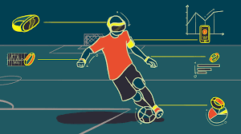

Site 1; Author: Shirly Diana |
"10 Most Innovative Wearables for Fitness and Sport" |
Abstract: |
This website is all about wearable technology in today's world of athletics and sports. It lists specific sportswear devices that are used today, and talks about them in depth. A few examples are "Smart Socks", "Swim Tracker", and "Football Tracker''. The article elaborates on each individual gadget and the technology that is involved in it. Each gadget aids in certain goals for specific sports. Many of them are stated to have voice coaches installed, as well as tracking devices for running, swimming, heart rate, and more. The website contains links to each device, and highlights the issues that the wearable technology can help prevent. |
Site 2; Author: Mark Carey |
"How the growth of wearable technology is transforming football" |
Abstract: |
In this article, Mark Carey talks about the game-changing tracking devices used in "football" (soccer). He talks about how wearable GPS vests are very important in tracking performance and even preventing non-contact injuries. The tracking devices he mentioned include "STATSports" which measures internal workload of the body, and "MatchTracker" which can track individual players statistics as well as a teams performance and positioning. Carey also quotes well-known athletes, and their opinions on the revolutionized technology. While giving an outlook on professional sports, the article also ends with options for the traditional athlete, and wearable technology that can be used across households. |